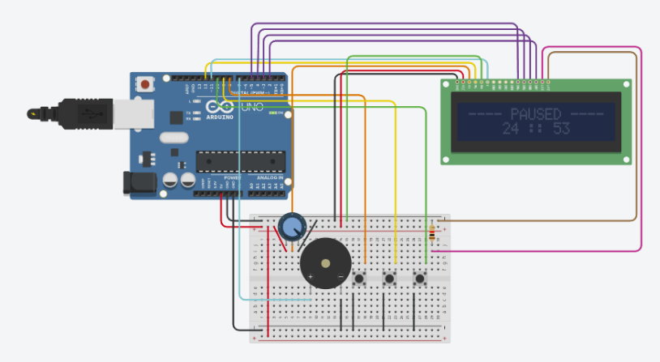
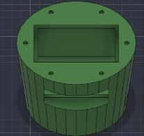
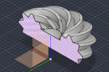
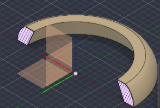
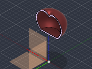

The idea
The Pomodoro technique is simple: focus for 25 minutes, take a 5-minute break, repeat. The problem was that every time I used a timer on my phone, I'd pick up my phone and end up on something else. So I decided to build a timer that does one thing and nothing else.
My requirements were:
- an auto mode (the classic 25/5) and a custom mode where I can pick the focus length, break length and number of cycles
- the ability to pause, resume or exit a session at any time
- a buzzer to tell me when to switch, and a way to mute it
- a case that actually looks good on my desk
The circuit
The timer runs on an Arduino Uno R3. I first built the full circuit in Tinkercad.

The parts are pretty minimal:
- 16x2 LCD: shows the menus and the countdown. I ran it in 4-bit mode (RS → 12, E → 11, D4–D7 → 5, 4, 3, 2) to save pins. The potentiometer sets the screen's contrast, and a 220 Ω resistor limits current to the backlight.
- Buttons: left (pin 9) and right (pin 8) move through the menus, and select (pin 10) confirms, or pauses while a timer is running. I later added a fourth button on pin 6 for mute.
- Piezo buzzer (pin 7): plays the alerts.
One nice detail is that the buttons don't need any resistors. Each one just connects its pin to ground, and I turn on the Arduino's internal pull-up resistors with INPUT_PULLUP. A pin reads HIGH normally and LOW when the button is pressed.
The code
The problem with delay()
My first version used delay() to count down. It worked, but delay() freezes the whole program, so pressing a button in the middle of a countdown did nothing. That made pausing impossible.
The fix was to rewrite the timer as a state machine. Instead of waiting, the program is always in one state (MAIN_MENU, FOCUS, REST, PAUSED, SUMMARY, and so on). Every time it loops, it checks the clock with millis() and decides whether it's time to move to the next state. Since nothing ever blocks, the buttons are checked thousands of times a second.
The main loop ended up being tiny:
void loop(){
readSerial();
int btn = readButtons();
if (btn >= 0) handleButton(btn);
update();
draw();
}And update() just checks whether the current phase has run out:
switch (state){
case FOCUS:
if (msLeft() == 0) focusFinished();
break;
case REST:
if (msLeft() == 0) restFinished();
break;
...
}Pausing is now easy. When I pause, I save how many milliseconds were left. When I resume, I set a new end time from that saved value, and the countdown picks up exactly where it stopped.
Small details
- Debouncing: a button "bounces" when pressed, and one press can register as several. I only accept a change if the button has held steady for 30 ms.
- Remembering mute: the mute setting is saved to the Arduino's EEPROM, a small amount of memory that keeps its contents with the power off. If I mute it, it stays muted after a restart.
Controlling it from my computer
Once the timer worked on its own, I wanted to control it from my laptop. The Arduino already talks over its USB cable, so I designed a simple text protocol at 115200 baud:
- my computer sends commands like
START 25 5 4(25 min focus, 5 min break, 4 cycles),PAUSEorMUTE - the timer replies every second with a
STATEline containing its current state and time left - it sends
EVENTlines when a block finishes
On the computer side, I built a web app called Pomegranate that connects using the browser's Web Serial API, with no drivers or installs needed. Because the app's display is driven by the timer's own status messages, the LCD and the app always stay in sync.
Pomegranate turned into a bit of a study hub. It has:
- a task list where I can rate difficulty
- a calendar
- a daily journal
- an analytics tab that gives each session and each day a productivity score
It's installable as an app and syncs between my laptop and phone with Firebase. It also has a built-in timer for when the device isn't plugged in.
The case
I designed the case in Autodesk Fusion and 3D printed it.




It's made of two main pieces:
- Base (green): holds the Arduino and breadboard, with a window for the LCD and a cutout for the USB cable.
- Lid: a swirled top capped with a little red pomegranate, sitting on a ring that locks onto the base.
The two halves are held together with magnets pressed into the pockets around the rim, so I can pop the lid off to get to the electronics without unscrewing anything. I used section views to make sure the wall thicknesses and magnet pockets lined up before printing.
What's next
The first version works great, but it's tied to a USB cable and it's pretty big. The next version is a small, wireless desk robot about the size of an action figure:
- New brain: an ESP32-S3 board with a round 1.28" touchscreen. The screen becomes the robot's face: it can show eyes, a countdown ring and text, and touch replaces the buttons. It also has a motion sensor, so I can do things like flip it face-down to start focusing.
- Bluetooth: the ESP32 talks to Pomegranate over Bluetooth Low Energy, using the same text protocol as the USB version, so the app barely needs to change.
- Battery power: a small LiPo, charged over USB-C, plus a vibration motor for silent alerts.
- Custom PCB: once everything works on a breadboard, I'm planning to design a small board in Altium for the buzzer, motor driver, power switch and buttons. It'll be shaped to fit inside the body and replace the mess of wires.
- A more compact case: designed around the round screen and the new board.
Conclusion
This was the first project where I took something from a breadboard all the way to a finished device on my desk, and then kept going with the app. The biggest lesson was the switch from delay() to a state machine. It's a small change in code, but it's the difference between a timer that just counts down and one you can actually interact with.